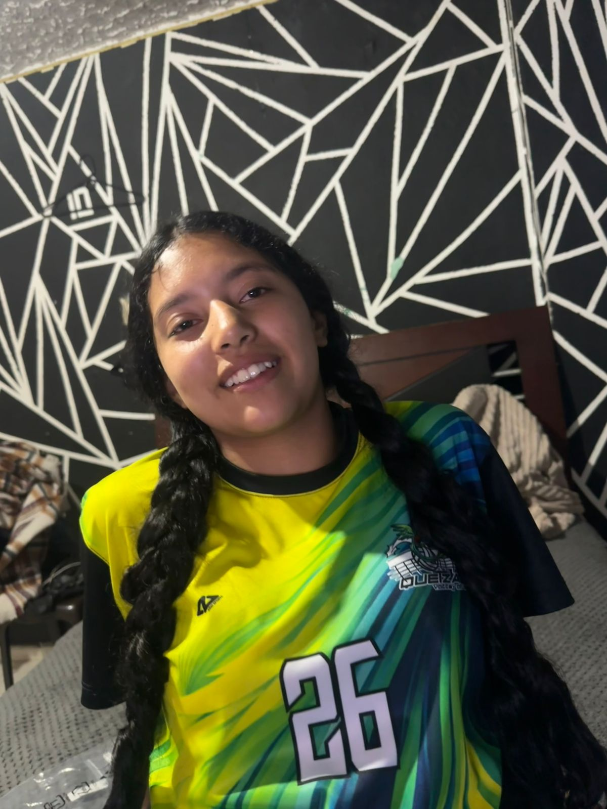
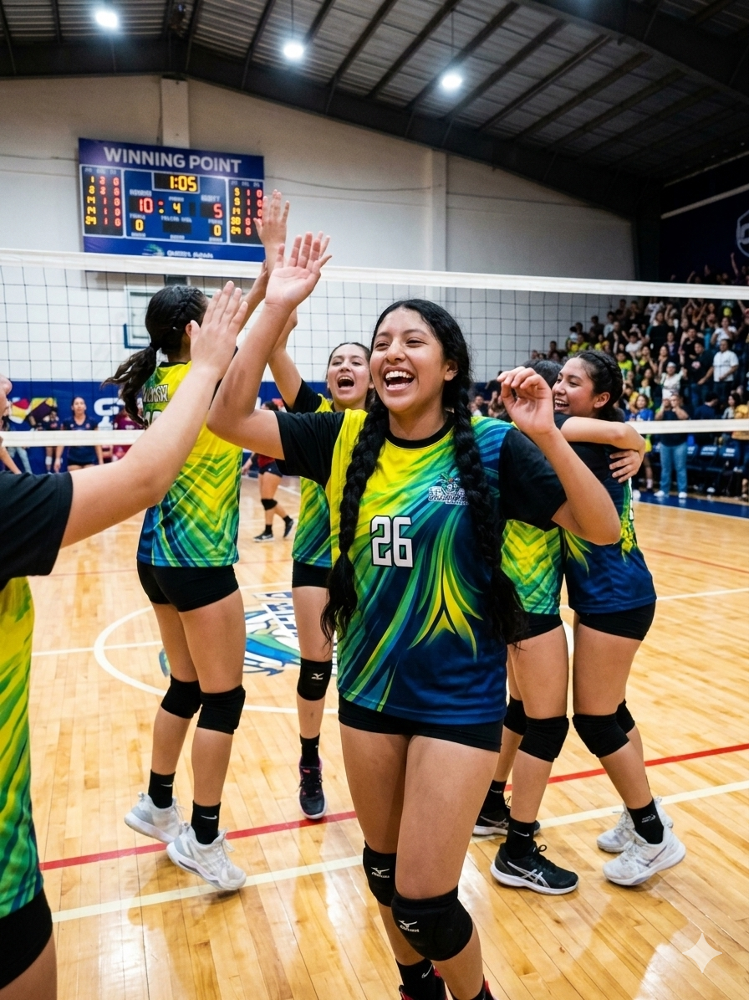

Voleibol
Disciplina y rapidez en la cancha.

Estudiante | Atleta | Futura Bióloga
Soy apasionada por el voleibol y la biología. Destaco por mi rapidez y memoria retentiva.

10° Grado | Voleibol | Biología
Apasionada por el deporte y la ciencia. Disciplinada, constante y con metas claras en la universidad.
Disciplina y rapidez en la cancha.
Camino a la graduación con honores.
Preparación para el futuro global.